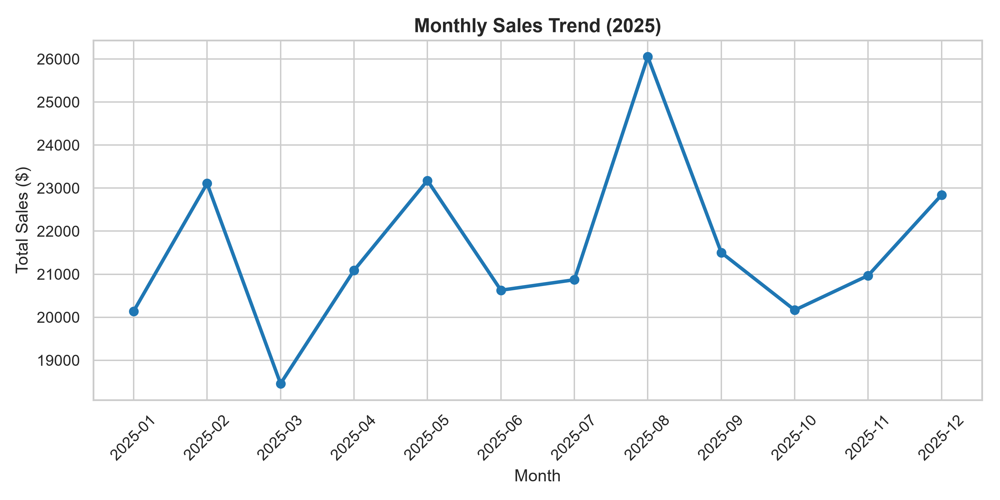
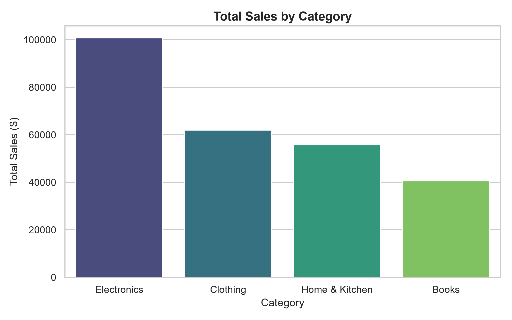
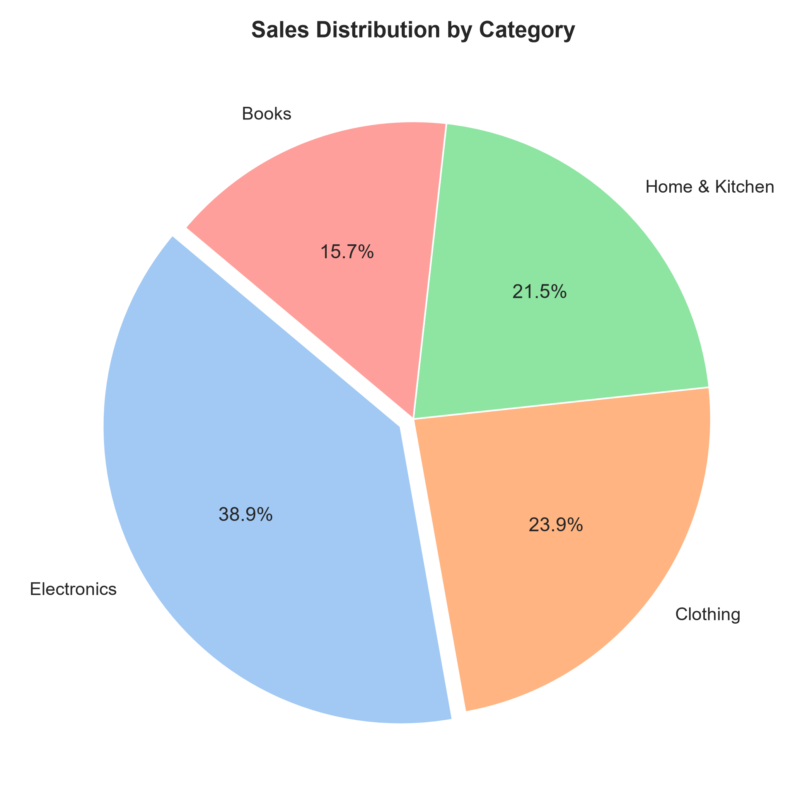

Time Series & Category Charts Analysis
SyntecxHub Project 1 — Visualizing sales patterns, categorical distribution, and market share.
1. Monthly Sales Trend (Time Series)

2. Category Comparison (Bar Chart)

3. Sales Share by Category (Pie Chart)
